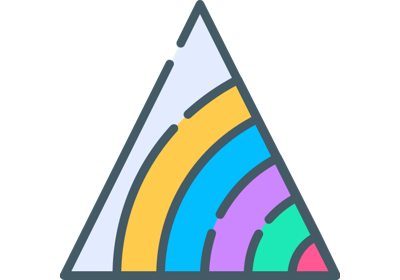
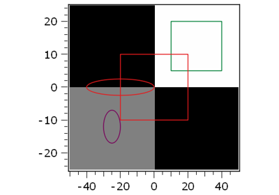
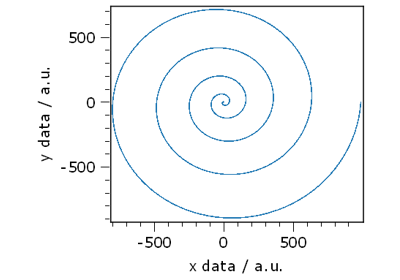
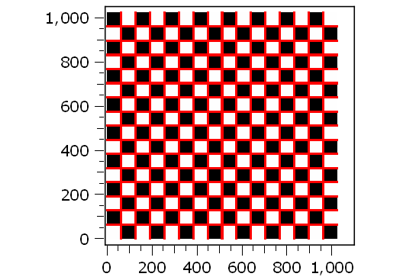
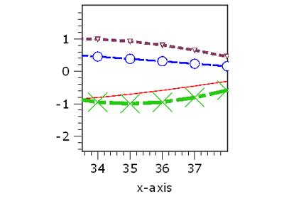
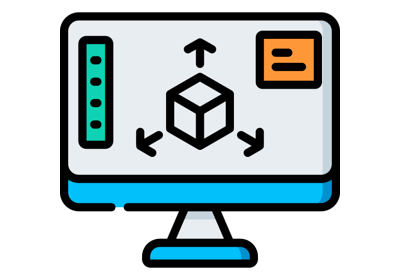

12.1.10.5. Plots¶
Plot 2.5D/ 3D


Contourlines 2D plot


Auto-update plot
Datetime
Draw pickers 1D plot
Interactive shape picker


Colored shapes


Plot XY

Draw markers


1D Line properties



VTK 3D Visualizer
Mask editor